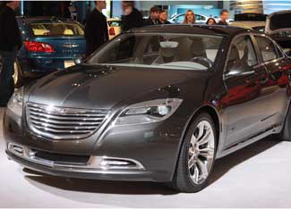

Chrysler, Ford And Other Automakers Unveil Plans For Electric Vehicles
Large automakers and small startup companies alike showcased electric vehicles at famous auto show in Detroit.
From EERE Network News
Jan. 14, 2009
General Motors may be receiving the lion's share of attention for its Chevy Volt, but Chrysler, Ford and other automakers are also pushing forward in the development of electric and plug-in hybrid electric vehicles (also known as range-extended electric vehicles).
At the North American International Auto Show in Detroit, Chrysler has unveiled the 200C EV Concept, a sports sedan with an all-electric range of 40 miles and an extended range of about 400 miles. Chrysler also added the Jeep Patriot EV - another range-extended electric vehicle - to its collection of electric vehicle concepts that it first unveiled last September. That collection includes electrified versions of the Jeep Wrangler and the Chrysler Town & Country minivan, as well as a Dodge-branded all-electric sports car that's based on the Lotus Europa S.
Chrysler still won't say which of the vehicles will be produced for North American markets in 2010, but the company has updated its Dodge EV with Dodge-specific front and rear ends and a Dodge interior, and it has renamed the vehicle as the Dodge Circuit EV, so maybe that's a clue.
If Chrysler does release an all-electric sports car in 2010, it will be in direct competition with two North American startup companies: Tesla Motors and Fisker Automotive.
Tesla produces the Roadster, an all-electric two-seater with a body inspired by the Lotus Elise and built by Lotus Engineering. On Sunday, Tesla started taking orders for the new Roadster Sport, an enhanced-performance version of the Roadster that will sell for $128,500 when deliveries begin in June. Tesla has so far produced 150 Roadsters, which sell for $109,000, and the 1,100 people on the company's waiting list have the option of upgrading to the Roadster Sport.
Meanwhile, Fisker unveiled the production version of its 2010 Fisker Karma, which employs Quantum Technologies' electric drive to achieve an all-electric range of up to 50 miles. The range-extended four-seat electric vehicle employs a lithium-ion battery pack to power two 201-horsepower electric motors and starts at $87,900. Deliveries will start late this year. Fisker also unveiled the Karma S concept, which features a retractable hardtop.
While small startups are taking the lead in electric vehicles in North America, Ford announced that it will introduce an all-electric commercial van in 2010, an all-electric small car in 2011 and a plug-in hybrid by 2012.
By then, it might be competing with China's BYD Auto, which recently began selling a range-extended electric vehicle in China called the F3DM. The F3DM, a mid-size sedan, has an all-electric range of 62 miles and a top speed of 93 miles per hour. BYD is exhibiting its vehicles in Detroit for the second year in a row, and along with the F3DM, the company is also exhibiting an all-electric crossover vehicle with a range of 249 miles, a larger version of the F3DM, a version with a continuously variable transmission, and a compact vehicle. With financial backing from Warren Buffet, BYD plans to introduce its cars in Europe and Israel in 2010, and in North America sometime later.
A nearer-term competitor in the North American market is Toyota, which plans to deliver 500 Prius plug-in hybrids to global fleets later this year, including 150 in the United States. The lithium-ion batteries for the vehicles will be built at Panasonic EV Energy, a joint venture of Toyota and the Matsushita Group. In Detroit, Toyota is displaying a small electric-only concept vehicle for urban commuters, the FT-EV. Although the company plans to launch such a vehicle by 2012, its primary emphasis is still on hybrid vehicles.
Other overseas participants in the Detroit Auto Show include Mercedes-Benz, which is exhibiting three versions of a small concept car: an all-electric version, a range-extended version and a fuel cell version. Mercedes-Benz isn't announcing any commercialization plans, but its sister company, Smart, is planning to launch an electric-drive version of the Smart Fortwo by the end of the year. The vehicle is on display in Detroit, but Smart hasn't decided whether to market the lithium-ion-powered vehicle in the United States. Even Johnson Controls is exhibiting a plug-in hybrid concept called the re3, which embodies the technologies the company can offer to automakers. Johnson Controls is producing lithium-ion hybrid vehicle batteries in France under a joint venture with Saft.
The North American International Auto Show opens to the public on Saturday and continues through Jan. 25. See the NAIAS website for more information.
Reprinted from EERE Network News, a free newsletter of the U.S. Department of Energy.
|
 CHRYSLER Chrysler's EV Concept has an all-electric range of 40 miles and an extended range of about 400 miles. |
 CHRYSLER The Dodge Circuit EV can be driven for up to 200 miles between battery charges. |
|